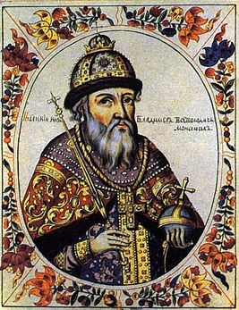
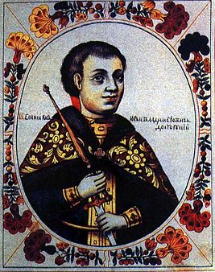
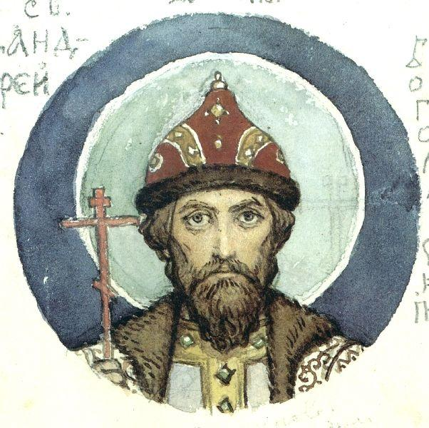

12 век.
Киевская Русь в 12-м веке
К концу 11-го - началу 12-го в. Киевская Русь превратилась в довольно развитое государство во многом благодаря развитию народного хозяйства: появилась регулярная система землепользования, были освоены новые сельскохозяйственные культуры, развивалось скотоводство. Постепенно происходила специализация производства и процесс разделения труда. Вместе с деревнями развивались и города: к началу 12-го в. на Руси насчитывалось порядка 300 крупных городов, росло их благосостояние. Однако в политической жизни государства начали происходить довольно серьезные изменения. Прежде всего 12-й в. (его вторая половина) ознаменован постепенным снижением власти Киева и упадком Киевского княжества.
Упадок Киева. Внутренняя политика на Руси
Причин для ослабления Киевского княжества было несколько:
- снижение важности торгового пути «из варяг в греки», который имел большое значение для экономики региона.
- усиление князей на местах (рост их благосостояния привел к тому, что князья больше не нуждались в существенной поддержке со стороны Киева).
- рост военной напряженности в Киеве. Город постоянно подвергался атакам со стороны как кочевников, так и других князей, желавших добиться великого княжения. С каждым годом обстановка в княжестве становилась более напряженной.
Несмотря на все более тяжелое положение дел, князь Мстислав Владимирович (сын Владимира Мономаха) предпринимал попытки снова объединить Русь под началом Киева, которые, однако, не увенчались успехом. Уже к концу 12-го в. центр Руси все больше смещался в сторону Владимиро-Суздальского княжества. Хотя Киев не утратил своего политического влияния вплоть до начала монголо-татарского нашествия, в конце 12-го в. серьезную конкуренцию старой столице составлял Владимир. Усиление отдельных княжеств привело к тому, что страна стала более разрозненной, в регионах стали появляться собственные центры власти, объединявшие под своим началом несколько близлежащих княжеств. Экономическая и политическая жизнь Руси к концу века также потеряла централизованность.
Развитие феодализма в 12-м в.
В 12-м в. фактически завершается процесс формирования социальной структуры общества, характерной для большинства средневековых государств: общество делится на свободных и зависимых людей, появляются социальные слои. С развитием общества и экономики все большее значение стали играть поземельные интересы. Князья, ранее обладавшие большей частью всех земельных владений, постепенно передавали часть своих административных прав на земли боярам и монастырям, чтобы те могли самостоятельно заниматься сбором дани с вверенных им территорий, освобождая от этого самих князей. Так начала формироваться система частного, боярского и монастырского землевладения. Позднее бояре и монастыри, получившие права на землю, смогли расширить собственные хозяйства за счет княжеских территорий; в этих новых, более обширных хозяйствах все чаще работали крестьяне, должники или те, кто искал защиты у боярина. Феодализм развивался.
Внешняя политика
Основное направление внешней политики в этот период - борьба с кочевниками, которые периодически нападали на Русь, а также попытки завоевать некоторые близлежащие земли и установить прочные контакты с пограничными европейскими княжествами.
Быт и культура Руси в 12-м в.
Культура Киевской Руси в 12-м в. формировалась под влиянием языческих традиций и древнего быта, а также традиций недавно принятого христианства. Традиционная русская культура со всеми ее национальными чертами и отличиями в этот период только начинает свое становление - развиваются новые ремесла, изобразительное искусство, зодчество.
Правление Владимира Мономаха

Будучи смоленским князем, Владимир не только стремился наладить мирные отношения с соседними князьями, но и помогал им в борьбе с врагами. Он являлся организатором съездов удельных князей в Любече (1097 г.) и в Витичеве (Уветичах) (1100 г.). Хотя отец завещал великое киевское княжение именно ему, Владимир Мономах отказался от этой великой чести и назвал князем киевским Святополка 2-го Изяславича, своего двоюродного брата. Позже Мономах оказывал Святополку помощь в походах на кочевников-половцев. Завещание Всеволода осуществилось только после смерти Святополка 2-го в 1113 г. На правление Владимир Мономах был призван верхушкой киевской знати, устрашившейся разгоревшегося народного восстания против ростовщиков. Князь не только подавил смуту, но и счел необходимым разобраться в причинах ее возникновения. Стремясь предотвратить повторение подобного, он способствовал урегулированию норм долгового права, что было отражено в Уставе Владимира Мономаха. Этим Уставом отменялось холопство за долги, устанавливался точный размер взимаемых процентов, что улучшало положение должников и наемных работников (закупов). Годы правления Владимира Мономаха ознаменовались непрерывной борьбой с половцами. Стремясь укрепить мир в русских землях, Владимир помогал удельным князьям в борьбе с кочевниками. Немногим менее 20 раз заключал с половцами мир. Был сторонником наступательной политики и организовывал рейды вглубь половецких территорий. Активно использовал для организации своих походов народное ополчение. И такая позиция приносила свои плоды. В те периоды, когда кочевники уходили от границ Руси и на пограничных землях наступал мир, популярность князя была невероятно высока. В 1116 г. Мономах участвовал в войне против Византии, поддерживая свергнутого императора Диогена, женатого на Марии, его дочери. Война прекратилась после гибели Диогена. В том же году сын Владимира Мономаха Мстислав был отправлен в поход на половцев. В 1120 г. с русских земель были изгнаны печенеги.
Правление князя Владимира Мономаха привело к серьезному экономическому и политическому усилению Руси. Это был период расцвета культуры и литературы. Стоит отметить, что для своего времени Владимир был прекрасно образованным человеком и обладал несомненным литературным талантом. На закате жизни он создал дошедшее до нашего времени «Поучение Владимира Мономаха детям». Рассказ князя о своей жизни, письмо к князю черниговскому и мудрые советы потомкам - вот краткое содержание «Поучения Владимира Мономаха». Обращаясь к читателю, русский князь призывает творить добро и иметь страх божий в сердце. Дает Владимир и вполне практические советы: не полагаться в войне на воевод, устанавливать строгий порядок и требовать соблюдения его, не расставаться с оружием в неспокойные времена, любить жену, но не давать ей власти над собой и т.д. Важнейшее значение этого произведения заключено не в его литературных достоинствах и практической полезности, а в прозвучавшем из уст князя призыве к объединению русских земель и прекращению усобиц. Умер Владимир Мономах в 1125 г., 19 мая. Князь был похоронен в киевском Соборе Святой Софии. После смерти Мономаха на киевский престол взошел его сын, Мстислав Великий.
Правление князя Юрия Долгорукого

История основания Москвы
О том, что находилось на территории Москвы задолго до ее основания, сведений немного. Известно, что на территории нынешней Москвы было найдено несколько древних городищ, относящихся к Дьяковской культуре (железный век). Эти городища на данный момент являются самыми ранними поселениями, найденными на территории современной Москвы. Незадолго до появления единого Русского государства на территории будущей Москвы проживали многочисленные финно-угорские племена, которые селились небольшими хуторами вдоль реки. Позднее тут появились также славянские поселения, по большей части принадлежащие племени вятичей. Согласно данным археологов, земли, ныне принадлежащие Москве, были заселены разрозненно и какого-то единого поселения здесь не существовало. Точная дата основания Москвы неизвестна - до сих пор ведутся споры относительно не только года заложения первого камня, но даже века. Существует версия, согласно которой Москва появилась еще в 9-м в. - во времена правления князя Олега, однако на сегодняшний день убедительных доказательств этой версии не существует. Первое упоминание о Москве в русских летописях датировано 1147 г. - период, когда Киевская Русь начала распадаться на части, а власть теряла централизованность. Город упоминается в связи с именем великого князя киевского Юрия Долгорукого, который созвал военный совет в городе и позвал «На Московь» новгород-северского князя Святослава Олеговича. Историки полагают, что к моменту первого упоминания в летописи на месте Москвы существовало довольно крупное поселение, которое затем переросло в город. Относительно даты строительства крепости и города на месте поселения также ведутся споры. Некоторые считают, что Москва была основана в 1156 г., когда князь Юрий Долгорукий заложил на месте старого поселения город и выстроил новую деревянно-земляную крепость. Однако эти сведения часто подвергаются сомнению, так как великий князь в то время княжил в Киеве, а в летописи содержатся весьма отрывочные сведения о его визитах на территорию будущей Москвы. Часть историков полагает, что город был основан чуть ранее, в 1153 г., а другая часть высказывает мнение о том, что основание Москвы нужно приписывать не самому Юрию Долгорукому, а его сыну - Андрею. Однако, несмотря на споры, принято считать, что Москва была основана в 1147 г. Юрием Долгоруким. Точный день основания также является загадкой, поэтому день города в Москве отмечают в первую субботу сентября. Столичный статус город приобрел в 1547 г., когда царем на Руси стал Иван Грозный. В 1712 г. Москва уступает свой титул Санкт-Петербургу, однако в 1918 г. снова его возвращает.
Московский Кремль
Основание любого древнего города тесно связано с заложением крепости. Первая крепость в Москве была заложена Юрием Долгоруким, имела небольшой периметр и служила в основном для проживания и хозяйственных нужд. На сегодняшний день не осталось никаких следов этого древнего укрепления. В 14-м в. существовавшая крепость была перестроена - на месте старых земляных и деревянных укреплений возникают белокаменные (отсюда название Москвы - Белокаменная). И только после 15-го в. крепость начинает активно отстраиваться, расширяться. В 18-м в., после постройки ряда новых зданий, Московский Кремль приобретает знакомый всем облик.
Название города
Название город получил в честь Москвы-реки, на которой и был построен. Что касается самого слова, то существует несколько версий. Согласно одной из них, название происходит от древнеславянского корня «моск», имеющего двойное толкование (нечто мокрое и влажное: «промозглый»; а также ум: «мозговитый»). Второй версией появления слова является финно-угорская: «Москва» стало соединением марийских слов: «маска» - «медведь» и «ава» - «мать». Существует также еще множество разнообразных версий. Наиболее распространенная на сегодняшний день версия толкования названия идет из языка коми и означает «Коровья река».
Правление Андрея Боголюбского

Краткая биография Андрея Боголюбского
Первые упоминания об Андрее Боголюбском в летописях относятся к периоду вражды его отца, Юрия Долгорукого, со своим племянником, Изяславом Мстиславовичем. Точная дата рождения неизвестна. Предположительно, будущий князь родился в 1111 г. в Суздале (ныне Владимирская область). О жизни Андрея в детстве и юности известно мало. Ученые предполагают, что он, как и все сыновья князей, получил хорошее воспитание и образование, немаловажную роль в котором играли духовность и христианство.
После совершеннолетия, в 1149 г., Юрий отправил сына княжить в Вышгород, однако спустя всего год Андрей был переведен на запад Руси, где управлял Туровом, Пинском и Пересопницей. В 1151 г. Долгорукий возвращает сына обратно в Суздальскую землю, а в 1155 г. снова отправляет княжить в Вышгород. Вопреки воле отца спустя некоторое время Андрей возвращается во Владимир и, согласно летописи, привозит с собой икону Богородицы (позднее - Владимирская Богоматерь). Боголюбский продолжает править во Владимире, который на тот момент был достаточно небольшим городом, уступающим в своем политическом и экономическом влиянии Ростову, Мурому и другим городам. В 1157 г. умирает Юрий Долгорукий, и Андрей наследует титул князя киевского, однако переезжать в Киев отказывается, несмотря на заведенный обычай. В этом же году Андрея Боголюбского избирают князем ростовским, суздальским и владимирским. В 1162 г., опираясь на помощь своих слуг, Боголюбский изгоняет из Ростово-Суздальского княжества всех своих родственников, дружину своего покойного отца и становится единоличным представителем власти в княжестве. Отказ Андрея Боголюбского княжить в Киеве был воспринят как перенос столицы Руси во Владимир, однако историки до сих пор оспаривают правомерность подобного утверждения. Тем не менее в литературе очень часто можно встретить утверждение о том, что Андрей Боголюбский сделал Владимир новой столицей государства в период своего правления, подобная версия считается общепринятой. За время своего правления во Владимире Андрей Боголюбский смог подчинить себе многие земли и завоевать огромное политическое влияние на северо-востоке Руси.
В 1164 г. князь Андрей и его войско совершают удачный поход на волжских булгар, а в 1169 г. - поход на Киев, в результате которого город был разорен его дружинниками. Андрей Боголюбский погибает в ночь с 29 на 30 июня 1174 г. в Боголюбове в результате заговора бояр из числа его ближайших соратников. В 1702 г. был канонизирован.
Внутренняя и внешняя политика Андрея Боголюбского
В самом начале правления Андрея Ростово-Суздальское княжество стремительно развивалось благодаря притоку людей из других земель, которые бежали из Киева, обстановка в котором становилась все более опасной из-за постоянных набегов кочевников. Именно благодаря усилиям Андрея Боголюбского г. Владимир и Ростово-Суздальское княжество превратились в один из главных политических и экономических центров Руси, отняв часть власти у Киева. А Владимир во время правления Андрея превратился из небольшого города в настоящую столицу: была построена крепость, Успенский собор и другие сооружения, которые сформировали образ города. Во Владимире кипела политическая и экономическая жизнь. Историки сходятся во мнении, что именно этот перенос власти во Владимир во многом стал предшественником дальнейшего усиления этой части Руси и ослабления Киева. Андрей Боголюбский, который активно проводил политику усиления самовластия, считается предвестником формирования системы самодержавия на Руси. Андрей Боголюбский также сделал немало для развития культуры и религии на Руси. Он несколько раз пытался получить независимость от киевской митрополии, но это ему так и не удалось. Несмотря на это, князь стремился к большей религиозной и культурной самостоятельности Руси от Византии (культура в те времена была неразрывно связана с религией): основал несколько новых праздников, приглашал многочисленных зодчих для постройки и отделки храмов, что способствовало развитию русского зодчества и искусства. Помимо развития Ростово-Суздальского княжества, Андрей Боголюбский довольно часто совершал походы на своих соседей - Новгород, Киев - с целью укрепления власти. Во внешней политике князь, как и его предшественники, стремился к большей независимости Руси.
Итоги правления Андрея Боголюбского
По мнению историков, князь Андрей пытался совершить переворот в политическом строе Руси и сместить центр власти, что во многом ему удалось. Итогом правления Андрея Боголюбского стало появление нового политического и экономического центра - Владимира.